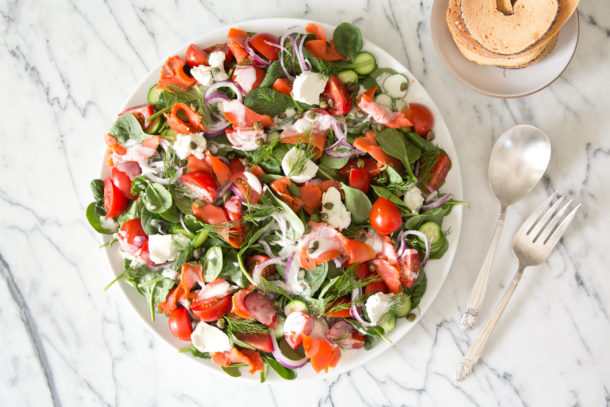

Disassembled Lox and Bagel Salad

Description
Ever thought there was too much bagel when eating Lox and bagel? If so, this
is the recipe for you. All the fixings are here: onions, capers, tomato, dill,
cucumber, and cream cheese. It is bulked up with baby spinach, and can be lightened
with avocado instead of cream cheese. Thin, toasted bagel slices give textural
contrast, and allow you to get a far better ratio of bagel to fixings than
you can get anywhere else.
Ingredients
- Dressing: a citrus or balsamic vinaigrette will work best here
- 6 oz baby spinach leaves
- 1 cup sliced cucumber
- 2 cups halved or quartered cherry or grape tomatoes
- 6 oz smoked salmon, cut into strips
- 4 oz cream cheese or a cubed avocado
- 1/2 cup thinly sliced red onion (about 1/4 of a small onion)
- 2 tbsp capers, patted dry
- 2 tbsp fresh dill fronds
- 8-10 bagel crisps
Directions
- Prepare all ingredients.
- Dress and toss spinach leaves.
- arrange spinach leaves on bottom of platter.
- top with all other ingredients except the bagel crisps.
- Enjoy the salad either by itself or with a bagel crisp.
Return to Homepage